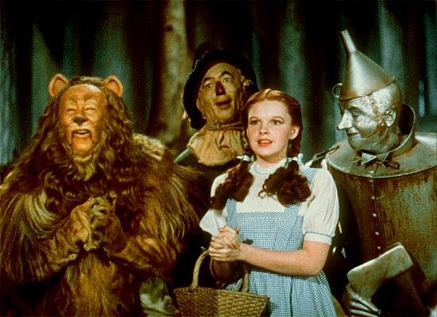
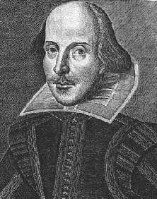

|

Texto de
Susana
Lopes de Alexandria

Oz
e Shakespeare inspiram episdio

|
O andride Data, por sua vontade de tornar-se humano, freqentemente comparado a dois personagens do universo infantil: Pinquio, o boneco de madeira que queria ser gente, e o Homem de Lata, personagem do filme O Mgico de Oz que sonhava ter um corao para humanizar-se. No episdio "The Schizoid Man", o dr. Ira Graves compara Data ao Homem de Lata e assobia o tempo todo a msica cantada pelo personagem no filme, em que ele fala como seria bom ter um corao e poder sentir emoes. a mesma msica que Data assobia depois de ter seu corpo "possudo" pelo dr. Graves.  O Homem de Lata (ltimo dir.) numa cena de O Mgico de Oz Veja abaixo a letra da cano (no original e uma traduo livre). Para ouvir a melodia, clique aqui (Midi, 17 KB). Heart When
a man's an empty kettle he should be on his mettle, Corao Quando um homem
uma chaleira vazia, ele deveria meter-se em brios
Picard cita seu autor favorito Quando Picard finalmente percebe que Data est "possudo" pelo dr. Graves, ele cita alguns versos de um soneto do poeta e dramaturgo ingls William Shakespeare: "Enquanto houver viventes nesta lida / H de viver meu verso e te dar vida" (So long as men can breathe or eyes can see, / So long lives this, and this gives live to thee.) Estes so os dois versos finais do soneto 18, um dos mais famosos de Shakespeare. Neste soneto, ele elogia a beleza de algum (provavelmente, uma mulher. Sim, h rumores de que Shakespeare era homossexual...), procurando algo na natureza que se compare a essa beleza. Ele decide compar-la a um dia de vero, mas logo desiste da comparao, pois o semblante de sua musa mais "afvel e belo". E nem sempre os dias de vero so agradveis, pois algumas vezes venta e outras vezes "a luz do cu calcina", fazendo um calor insuportvel. Alm disso, o vero dura muito pouco (pelo menos na Inglaterra de Shakespeare...), e sua bela amada viver para sempre. Mas como, se ningum imortal? a que entram os dois versos finais. Ela viver "enquanto houver homens vendo e respirando" (So long as men can breathe or eyes can see), que possam ler as palavras que ele dedicou a ela neste soneto: "Enquanto
houver viventes nesta lida, "So long as men
can breathe or eyes can see,  William Shakespeare O roteirista do episdio no colocou esses versos na boca do personagem do capito por acaso. H uma bvia relao entre este soneto de Shakespeare, em que o poeta tenta imortalizar sua amada atravs de seus versos, e a histria do dr. Graves do episdio, que deseja tornar sua amada literalmente imortal, propondo construir-lhe um corpo andride como o que ele roubou de Data. Leia abaixo o soneto no original e numa traduo feita por um poeta, mantendo as rimas tambm em portugus. Uma curiosidade: no episdio "Whom Gods Destroy", da Srie Clssica, aquela maluquinha verde, da raa rion, recita um poema alegando ser de sua prpria autoria e desmentida por outro personagem, que revela a verdadeira autoria - Shakespeare. O poema que ela recita este mesmo soneto. XVIII Shall I compare thee
to a summer's day? So long as men can
breathe or eyes can see, Soneto 18 Devo igualar-te a um
dia de vero? Enquanto houver
viventes nesta lida, Traduo de F.
Carlos de Almeida Cunha Medeiros e Oscar Mendes |